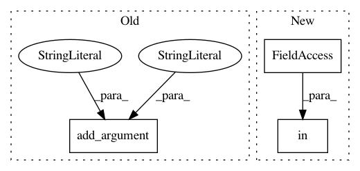

54d85a6c2a765fde77948b475db79f905a8618b6,rllib/examples/cartpole_lstm.py,,,#,7
Before Change
parser = argparse.ArgumentParser()
parser.add_argument("--run", type=str, default="PPO")
parser.add_argument("--num-cpus", type=int, default=0)
parser.add_argument("--torch", action="store_true")
parser.add_argument("--as-test", action="store_true")
parser.add_argument("--use-prev-action-reward", action="store_true")
parser.add_argument("--stop-iters", type=int, default=200)
parser.add_argument("--stop-timesteps", type=int, default=100000)
After Change
},
"framework": args.framework,
// Run with tracing enabled for tfe/tf2.
"eager_tracing": args.framework in ["tfe", "tf2"],
})
stop = {
In pattern: SUPERPATTERN
Frequency: 3
Non-data size: 3
Instances
Project Name: ray-project/ray
Commit Name: 54d85a6c2a765fde77948b475db79f905a8618b6
Time: 2020-11-02
Author: sven@anyscale.io
File Name: rllib/examples/cartpole_lstm.py
Class Name:
Method Name:
Project Name: dmlc/gluon-nlp
Commit Name: 111a3673fdec28a1bc768659577f47cad2753ec6
Time: 2019-05-16
Author: chenmengya11@post.eurasia.edu
File Name: scripts/sentiment_analysis/sentiment_analysis_cnn.py
Class Name:
Method Name:
Project Name: ray-project/ray
Commit Name: 841d93d366b1465959dba03512d64513c5ff568f
Time: 2020-11-25
Author: sven@anyscale.io
File Name: rllib/examples/multi_agent_cartpole.py
Class Name:
Method Name: